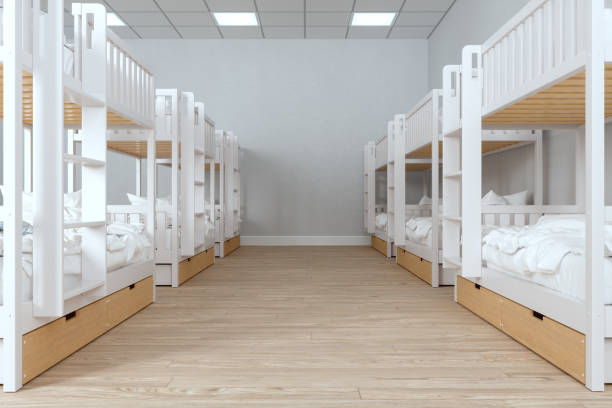

CHMK Library
Hostel

Sports complex
Lab
CUBG Garden
|
CHMK Library |
Calicut University Library has a rich collection of books,journals,maps,CD's,theses,etc. |
|  Hostel |
Boys Hostel-Number of beds-376,Girls Hostel-Number of beds-1028,good food and also wifi is available. |
Sports complex |
Available facilities:Basketball court,Cricket ground,Football ground,Tennis court,400mtrs Track,Synthetic indoor stadium,etc. |
Lab |
Available facilities:computer lab,language lab,science lab. |
CUBG Garden |
Calicut university Botanical Garden(CUBG)ia an excellent centre of bio diversity and conservation of tropical Indian flora and exotic species. |
| Other facilities: | Seminar complex,Conference hall,Bank and ATM,Oprn Air Theatre,Post office,Gust house,Park,Store,Hospital Facilities,Auditorium,etc. |